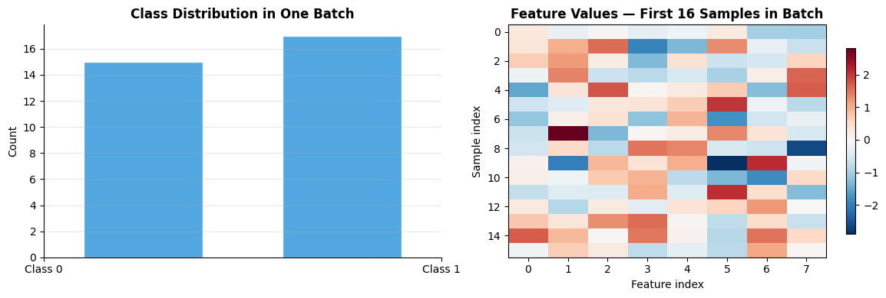
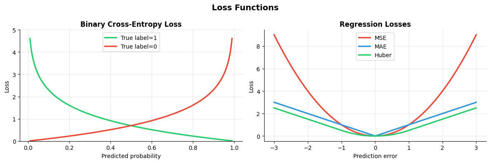
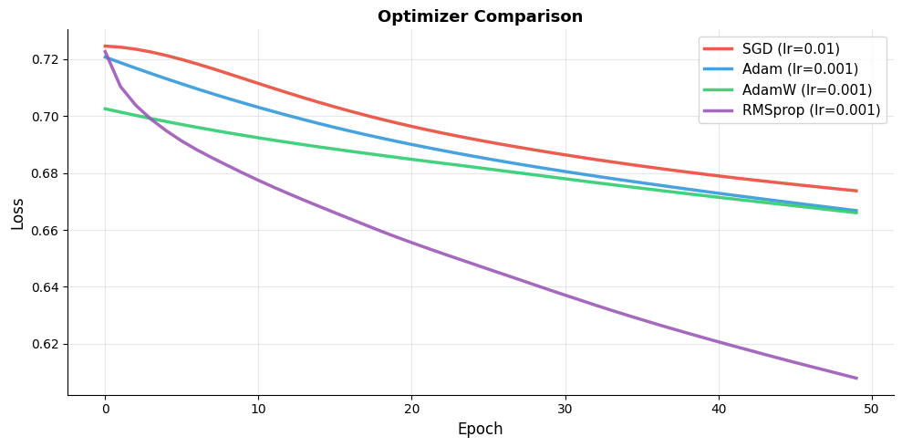
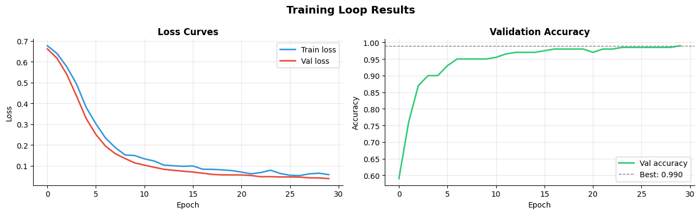

How do you train a model?#
Topics: Full Training Loop · Dataset · DataLoader · Loss Functions · Optimizers · train/eval Mode
1. Dataset & DataLoader#
What it is#
Dataset— wraps your data, defines__len__and__getitem__DataLoader— wraps a Dataset, handles batching, shuffling, parallel loadingTogether they form PyTorch’s standard data pipeline
Key intuition#
Datasetanswers: ‘give me sample i’DataLoaderanswers: ‘give me a shuffled batch of N samples’num_workers > 0loads batches in parallel background processes — faster training
When to use#
Always — even for small datasets, DataLoader handles batching cleanly
Custom Dataset for any data not already in torchvision/torchtext
Gotchas#
shuffle=Trueonly for training set — never for validation/testnum_workerscan cause issues on Windows — set to 0 if you see errorspin_memory=Truespeeds up CPU→GPU transfer when using CUDA
import torch
from torch.utils.data import Dataset, DataLoader
import numpy as np
import matplotlib.pyplot as plt
# --- Custom Dataset ---
class TabularDataset(Dataset):
def __init__(self, X, y):
self.X = torch.tensor(X, dtype=torch.float32)
self.y = torch.tensor(y, dtype=torch.long)
def __len__(self):
return len(self.X)
def __getitem__(self, idx):
return self.X[idx], self.y[idx]
# Generate synthetic data
np.random.seed(42)
X = np.random.randn(1000, 8)
y = (X[:, 0] + X[:, 1] > 0).astype(int)
dataset = TabularDataset(X, y)
train_size = int(0.8 * len(dataset))
val_size = len(dataset) - train_size
train_ds, val_ds = torch.utils.data.random_split(dataset, [train_size, val_size])
train_loader = DataLoader(train_ds, batch_size=32, shuffle=True, num_workers=0)
val_loader = DataLoader(val_ds, batch_size=64, shuffle=False, num_workers=0)
print(f"Dataset size : {len(dataset)}")
print(f"Train batches : {len(train_loader)}")
print(f"Val batches : {len(val_loader)}")
X_batch, y_batch = next(iter(train_loader))
print(f"Batch X shape : {X_batch.shape}")
print(f"Batch y shape : {y_batch.shape}")
print(f"Class distribution: {y_batch.bincount()}")
# Visualize batch composition
fig, axes = plt.subplots(1, 2, figsize=(12, 4))
axes[0].hist(y_batch.numpy(), bins=2, color='#3498DB', alpha=0.85, edgecolor='white', rwidth=0.6)
axes[0].set_xticks([0, 1])
axes[0].set_xticklabels(['Class 0', 'Class 1'])
axes[0].set_title('Class Distribution in One Batch', fontsize=12, fontweight='bold')
axes[0].set_ylabel('Count')
axes[0].grid(True, alpha=0.3, axis='y')
axes[0].spines['top'].set_visible(False)
axes[0].spines['right'].set_visible(False)
axes[1].imshow(X_batch[:16].numpy(), cmap='RdBu_r', aspect='auto')
axes[1].set_title('Feature Values — First 16 Samples in Batch', fontsize=12, fontweight='bold')
axes[1].set_xlabel('Feature index')
axes[1].set_ylabel('Sample index')
plt.colorbar(axes[1].images[0], ax=axes[1], shrink=0.8)
plt.tight_layout()
plt.savefig('dataloader_batch.png', dpi=120, bbox_inches='tight')
plt.show()
Dataset size : 1000
Train batches : 25
Val batches : 4
Batch X shape : torch.Size([32, 8])
Batch y shape : torch.Size([32])
Class distribution: tensor([15, 17])

2. Loss Functions#
What it is#
torch.nnprovides standard loss functions as classestorch.nn.functionalprovides them as functionsLoss is a scalar — gradient of loss w.r.t. parameters drives weight updates
Common losses#
Loss |
Class |
Task |
|---|---|---|
Binary Cross-Entropy |
|
Binary classification |
Cross-Entropy |
|
Multi-class classification |
MSE |
|
Regression |
MAE |
|
Regression (robust) |
Huber |
|
Regression (outlier-robust) |
Gotchas#
BCEWithLogitsLossexpects raw logits (no sigmoid) — more numerically stable thanBCELossCrossEntropyLossexpects raw logits and integer labels (not one-hot)Reduce argument:
mean(default),sum,none(per-sample losses)
import torch
import torch.nn as nn
import matplotlib.pyplot as plt
# --- Loss function examples ---
# Binary cross-entropy (with logits — no sigmoid needed)
bce = nn.BCEWithLogitsLoss()
logits_bin = torch.tensor([2.0, -1.0, 0.5])
labels_bin = torch.tensor([1.0, 0.0, 1.0])
print(f"BCE loss: {bce(logits_bin, labels_bin):.4f}")
# Cross-entropy (multi-class)
ce = nn.CrossEntropyLoss()
logits_mc = torch.randn(4, 3) # 4 samples, 3 classes
labels_mc = torch.tensor([0, 2, 1, 0])
print(f"CE loss : {ce(logits_mc, labels_mc):.4f}")
# MSE
mse = nn.MSELoss()
pred = torch.tensor([1.0, 2.0, 3.0])
tgt = torch.tensor([1.5, 2.5, 2.0])
print(f"MSE loss: {mse(pred, tgt):.4f}")
# Visualize loss surfaces
fig, axes = plt.subplots(1, 2, figsize=(12, 4))
p = torch.linspace(0.01, 0.99, 200)
bce_pos = -torch.log(p)
bce_neg = -torch.log(1 - p)
axes[0].plot(p.numpy(), bce_pos.numpy(), color='#2ECC71', linewidth=2.5, label='True label=1')
axes[0].plot(p.numpy(), bce_neg.numpy(), color='#E74C3C', linewidth=2.5, label='True label=0')
axes[0].set_title('Binary Cross-Entropy Loss', fontsize=12, fontweight='bold')
axes[0].set_xlabel('Predicted probability')
axes[0].set_ylabel('Loss')
axes[0].set_ylim(0, 5)
axes[0].legend(fontsize=10)
axes[0].grid(True, alpha=0.3)
axes[0].spines['top'].set_visible(False)
axes[0].spines['right'].set_visible(False)
err = torch.linspace(-3, 3, 300)
axes[1].plot(err.numpy(), (err**2).numpy(), color='#E74C3C', linewidth=2.5, label='MSE')
axes[1].plot(err.numpy(), err.abs().numpy(), color='#3498DB', linewidth=2.5, label='MAE')
axes[1].plot(err.numpy(), nn.HuberLoss(reduction='none')(err, torch.zeros_like(err)).numpy(),
color='#2ECC71', linewidth=2.5, label='Huber')
axes[1].set_title('Regression Losses', fontsize=12, fontweight='bold')
axes[1].set_xlabel('Prediction error')
axes[1].set_ylabel('Loss')
axes[1].legend(fontsize=10)
axes[1].grid(True, alpha=0.3)
axes[1].spines['top'].set_visible(False)
axes[1].spines['right'].set_visible(False)
plt.suptitle('Loss Functions', fontsize=14, fontweight='bold')
plt.tight_layout()
plt.savefig('loss_functions_pytorch.png', dpi=120, bbox_inches='tight')
plt.show()
BCE loss: 0.3048
CE loss : 1.9043
MSE loss: 0.5000

3. Optimizers#
What it is#
Algorithms that update model parameters using computed gradients
Defined in
torch.optim
Common optimizers#
Optimizer |
When to use |
|---|---|
|
CV tasks, well-tuned pipelines |
|
Default for most tasks |
|
Transformers, NLP |
|
RNNs |
Key intuition#
Optimizer reads
.gradfrom each parameter and updates the valuestep()applies the update,zero_grad()clears for next step
Gotchas#
Learning rate is the most important hyperparameter — start with 1e-3 for Adam
AdamW decouples weight decay from gradient update — better regularization than Adam+L2
import torch
import torch.nn as nn
import matplotlib.pyplot as plt
torch.manual_seed(42)
def train_model(optimizer_name, lr, epochs=50):
model = nn.Sequential(nn.Linear(8, 16), nn.ReLU(), nn.Linear(16, 2))
if optimizer_name == 'SGD':
opt = torch.optim.SGD(model.parameters(), lr=lr, momentum=0.9)
elif optimizer_name == 'Adam':
opt = torch.optim.Adam(model.parameters(), lr=lr)
elif optimizer_name == 'AdamW':
opt = torch.optim.AdamW(model.parameters(), lr=lr, weight_decay=0.01)
else:
opt = torch.optim.RMSprop(model.parameters(), lr=lr)
criterion = nn.CrossEntropyLoss()
X = torch.randn(128, 8); y = torch.randint(0, 2, (128,))
losses = []
for _ in range(epochs):
opt.zero_grad()
loss = criterion(model(X), y)
loss.backward()
opt.step()
losses.append(loss.item())
return losses
configs = [('SGD', 0.01, '#E74C3C'), ('Adam', 0.001, '#3498DB'),
('AdamW', 0.001, '#2ECC71'), ('RMSprop', 0.001, '#9B59B6')]
fig, ax = plt.subplots(figsize=(10, 5))
for name, lr, color in configs:
losses = train_model(name, lr)
ax.plot(losses, color=color, linewidth=2.5, label=f'{name} (lr={lr})', alpha=0.9)
ax.set_xlabel('Epoch', fontsize=12)
ax.set_ylabel('Loss', fontsize=12)
ax.set_title('Optimizer Comparison', fontsize=13, fontweight='bold')
ax.legend(fontsize=11)
ax.grid(True, alpha=0.3)
ax.spines['top'].set_visible(False)
ax.spines['right'].set_visible(False)
plt.tight_layout()
plt.savefig('optimizer_comparison.png', dpi=120, bbox_inches='tight')
plt.show()

4. Full Training Loop#
What it is#
The standard pattern for training a PyTorch model
Every training loop has the same 6 steps:
Zero gradients
Forward pass
Compute loss
Backward pass
Optimizer step
Track metrics
Key intuition#
This loop is the core of all PyTorch training — know it cold
Validation loop is the same but inside
torch.no_grad()and aftermodel.eval()
Interview Q&A#
Why call model.train() and model.eval()?
model.train()— enables dropout, sets BN to use batch statisticsmodel.eval()— disables dropout, sets BN to use running statisticsForgetting
model.eval()during validation → inconsistent results due to active dropout
What is the correct order of operations in a training step?
zero_grad → forward → loss → backward → step
Never swap backward and step — step reads the gradients backward just computed
import torch
import torch.nn as nn
from torch.utils.data import DataLoader, TensorDataset
import matplotlib.pyplot as plt
import numpy as np
torch.manual_seed(42)
# --- Data ---
X = torch.randn(1000, 8)
y = (X[:, 0] + X[:, 1] > 0).long()
ds = TensorDataset(X, y)
train_ds, val_ds = torch.utils.data.random_split(ds, [800, 200])
train_loader = DataLoader(train_ds, batch_size=32, shuffle=True)
val_loader = DataLoader(val_ds, batch_size=64, shuffle=False)
# --- Model ---
model = nn.Sequential(
nn.Linear(8, 32), nn.ReLU(), nn.Dropout(0.2),
nn.Linear(32, 16), nn.ReLU(),
nn.Linear(16, 2)
)
optimizer = torch.optim.Adam(model.parameters(), lr=1e-3)
criterion = nn.CrossEntropyLoss()
device = torch.device('cuda' if torch.cuda.is_available() else 'cpu')
model.to(device)
train_losses, val_losses, val_accs = [], [], []
for epoch in range(30):
# --- Training ---
model.train()
running_loss = 0.0
for X_batch, y_batch in train_loader:
X_batch, y_batch = X_batch.to(device), y_batch.to(device)
optimizer.zero_grad() # 1. zero gradients
out = model(X_batch) # 2. forward pass
loss = criterion(out, y_batch) # 3. compute loss
loss.backward() # 4. backward pass
optimizer.step() # 5. update weights
running_loss += loss.item()
train_losses.append(running_loss / len(train_loader))
# --- Validation ---
model.eval()
val_loss, correct, total = 0.0, 0, 0
with torch.no_grad():
for X_batch, y_batch in val_loader:
X_batch, y_batch = X_batch.to(device), y_batch.to(device)
out = model(X_batch)
val_loss += criterion(out, y_batch).item()
preds = out.argmax(dim=1)
correct += (preds == y_batch).sum().item()
total += len(y_batch)
val_losses.append(val_loss / len(val_loader))
val_accs.append(correct / total)
print(f"Final val accuracy: {val_accs[-1]:.3f}")
# --- Plot training curves ---
fig, axes = plt.subplots(1, 2, figsize=(13, 4))
axes[0].plot(train_losses, color='#3498DB', linewidth=2, label='Train loss')
axes[0].plot(val_losses, color='#E74C3C', linewidth=2, label='Val loss')
axes[0].set_title('Loss Curves', fontsize=12, fontweight='bold')
axes[0].set_xlabel('Epoch'); axes[0].set_ylabel('Loss')
axes[0].legend(fontsize=10); axes[0].grid(True, alpha=0.3)
axes[0].spines['top'].set_visible(False); axes[0].spines['right'].set_visible(False)
axes[1].plot(val_accs, color='#2ECC71', linewidth=2, label='Val accuracy')
axes[1].axhline(max(val_accs), color='gray', linestyle='--', linewidth=1,
label=f'Best: {max(val_accs):.3f}')
axes[1].set_title('Validation Accuracy', fontsize=12, fontweight='bold')
axes[1].set_xlabel('Epoch'); axes[1].set_ylabel('Accuracy')
axes[1].legend(fontsize=10); axes[1].grid(True, alpha=0.3)
axes[1].spines['top'].set_visible(False); axes[1].spines['right'].set_visible(False)
plt.suptitle('Training Loop Results', fontsize=14, fontweight='bold')
plt.tight_layout()
plt.savefig('training_loop.png', dpi=120, bbox_inches='tight')
plt.show()
Final val accuracy: 0.990

Gotchas#
Always move both model AND data to the same device
loss.item()extracts scalar — callinglossdirectly keeps the graph alive, wasting memoryTrack metrics outside
torch.no_grad()is fine — just don’t call.backward()thereUse
model.parameters()notmodel.state_dict()with optimizer — optimizer needs live parameter references